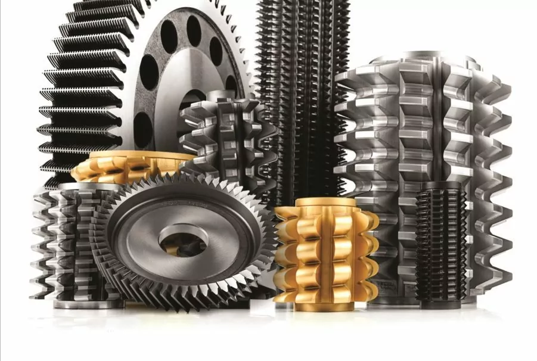

Somos fabricantes de herramientas para engranajes. Ofrecemos productos de excelente calidad, obtenidos con el aporte de la tecnología y la experiencia de dos prestigiosas firmas fabricantes de herramientas de precisión e instrumentos de medición. De esta manera, la marca SAS TOOLS cubre una gama muy amplia de herramientas para engranajes cilíndricos, manteniendo la flexibilidad y rapidez de respuesta propias de una eficiente empresa especializada.